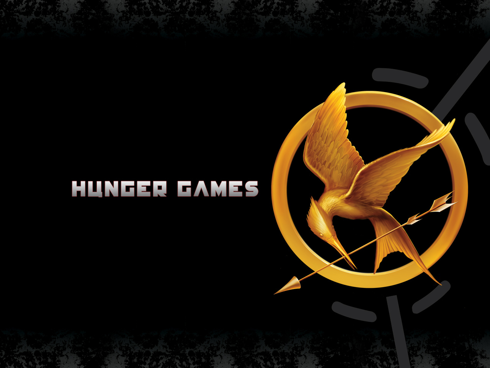

Exploring The Hunger Games Chapters 13-16

Callout
Read Chapters 13-16 to determine which alliance has a greater shot at surviving The Hunger Games.
Chapters 13-14
In chapter 13, there are many examples of manipulation by the Gamemakers. Give three examples from the chapter.

Explain why Katniss could not eat or sleep on the night after the fire.

Callout
Why do you think Katniss calls attention to herself when the Careers walk under the tree she is in? What does this say about her character?

Explain how the alliance between Katniss and Rue helped both girls. Why did they trust each other?

Why are the “tracker jackers” so dangerous?

The sponsors finally send Katniss a gift in Chapter 14. What did she receive, and why did they choose to help her at that moment? What other gifts have been beneficial to Katniss at this point in the story? Explain.
Personal Pronouns
Personal Pronouns are words that replace nouns. They usually refer to people. However, the pronoun “it” refers to a thing.
Examples: he, she, they, us, we, me, you, them, it, etc.
Callout
List four personal pronouns from the first paragraph of chapter 14. You do need to write the same pronoun more than once.

Think about Katniss’ plan for the “tracker jacker” nest. Do you think it was a solid plan even though she endangers herself in the process? Why or why not?
Why do you think Peeta acts the way he does at the end of Chapter 14? What does this say about his alliance with the Careers up to this point of the story?
A Guess for Dinner
Participate in the Discussion Forum: Which character from the book would you want to invite to your house for dinner? Explain.
Explain how Katniss plans to destroy the Careers’ food supply. How are Mockingjays important to the plan?
|
Beyond Sex and Violence Killing is against human nature. Sociologist Randall Collins comes to a similar conclusion in his massive study “Violence.” How is Suzanne Collins’ study connected to the Career’s decision to allow the boy from District 3 to live? In your opinion, who is Katniss’ biggest threat at this point in the Games? Explain. What has happened to Peeta at this point in the story? Describe Foxface and how is she able to steal food from the Careers? |